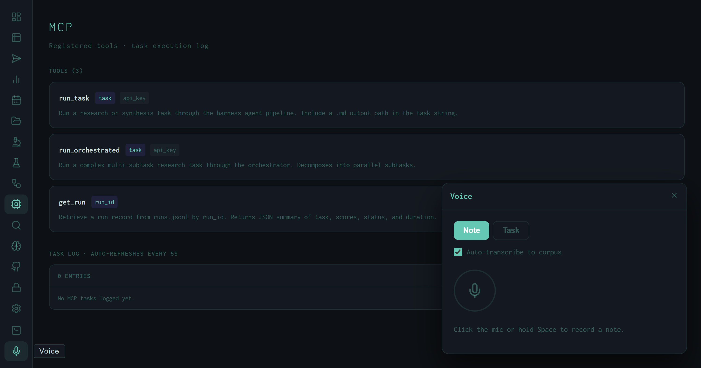

The Voice View: Push-to-Talk Notes, Task Dictation, and the Audio Data Flywheel
Hold Space to record, release to transcribe. Note mode saves to the ASR training corpus. Task mode corrects the transcript with an LLM and drops the result into the run queue. Three result types, one floating panel.
The Voice panel is a floating overlay that sits above whichever view is currently active in the dashboard. It doesn't replace the main view — it appears in the corner, captures a recording, and dismisses itself after you act on the result. The interaction is designed to be fast: hold Space, dictate, release, review, submit or save. The whole interaction takes roughly five seconds for a short task string.

Voice panel in Note mode, idle state. The circular mic FAB and status hint are the only controls visible at rest. The MCP view remains active in the background — the panel overlays without navigating away.
Two Modes
A toggle at the top of the panel switches between Note and Task. The mode determines how the audio is processed after transcription:
POST /api/notes/save with the text content, timestamp, and optional filename.
POST /api/queue.
Recording and Transcription
Two ways to start recording:
- Click the mic FAB — single click to start, single click to stop.
- Hold Space ≥ 900 ms — push-to-talk from anywhere in the dashboard (not captured inside a text input or textarea). Release Space to stop. The 900 ms hold threshold prevents accidental triggers from quick spacebar presses during normal keyboard use.
During recording, a green frequency-bar waveform renders on a canvas element above the mic button, driven by the Web Audio API AnalyserNode. The bars reflect real-time amplitude — a live visual confirmation that the microphone is capturing audio.
On stop, the browser packages the recorded chunks into a webm blob and POSTs it to /api/voice as a multipart form with audio, mode, and auto_transcribe fields. The server runs Whisper (on CUDA, per the system config) and returns a structured VoiceResult object.
Three Result Types
The server classifies the utterance into one of three result types and the panel renders accordingly:
notes/ with the recorded timestamp. If auto-transcribe was enabled, the audio pair was already saved to the corpus at transcription time.
The Auto-Transcribe Flywheel
The Auto-transcribe to corpus checkbox is the voice panel's contribution to the self-improvement loop. When enabled in Note mode, each recording produces two artifacts:
.wav with the recording timestamp.This is the audio equivalent of the RLHF preference loop that drives DPO fine-tuning in the Fine-tune view. Voice recordings accumulate in the background; periodically a NeMo RL training pass uses them to improve the local ASR model's accuracy on the operator's specific speech patterns and technical vocabulary.
The practical benefit is domain adaptation: the local Whisper model learns to correctly transcribe harness-specific terms like "wiggum", "SYNTH_INSTRUCTION", "DPO", "autoresearch", and model names like "qwen3.6-35b" — terms that a general-purpose ASR model reliably garbles.
Floating panel design
Voice renders as an overlay rather than replacing the active view. This means you can initiate a recording while reviewing a run in the Runs view, dictate a follow-up task, and return to the same run without any navigation. The panel is stateless — dismissing it (with the X button or after submitting) restores full focus to the background view.
LLM correction pass
Task mode runs an extra LLM inference step beyond raw Whisper transcription. The corrector interprets casual speech into valid task syntax — adding output file paths, converting "do a deep dive on X" to the correct /deep research X save to ~/Desktop/out.md form, and normalizing skill flags.
Push-to-talk threshold
The 900 ms Space hold threshold is intentional. Quick spacebar presses during typing should not trigger recording, so the timer waits for a sustained hold before opening the microphone. Releasing Space before 900 ms cancels without recording.
CUDA transcription
The Whisper inference runs on the local GPU (WHISPER_DEVICE=cuda in the active config). Transcription latency for a 5-second clip is typically under 1 second on the current hardware — fast enough to feel synchronous with the recording.